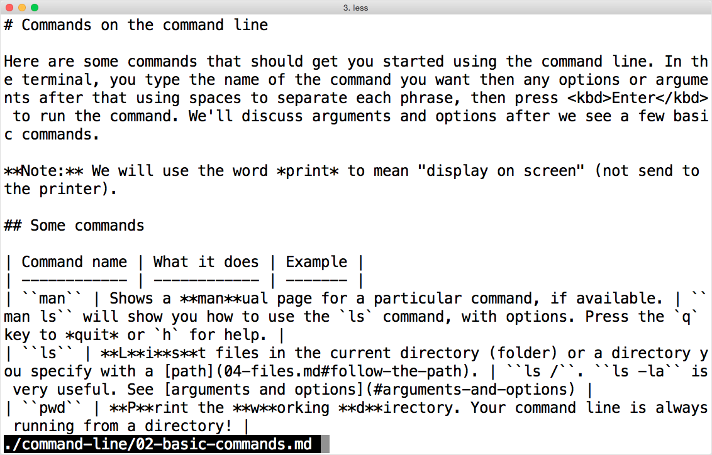

An introduction to the command line
Written by Daniel Cloud / @danielcloud
What is the command line?
or the "shell" or "bash" or "terminal", for that matter
Bash: GNU Bourne-Again SHell
“Bash is an sh-compatible command language interpreter that executes commands read from the standard input or from a file.”
– Bash's man page
Terminal window showing a bash shell prompt

Sample Prompt
dcmbp:~ dcloud$
- hostname
- separator
- current working directory
- username
- marker for end of prompt
The command line has color themes.

OS X's Terminal.app calls this the "Pro" theme
Let's learn some commands!
ls is for listing
Type ls to "print" a list of files and
directories to the terminal screen.
Use the l and a options to use a long format and show hidden files/directories (starting with a period).
ls -al
Control files & directories!
learn to use paths, find hidden files and more
What is the filesystem?
The filesystem represents information on all hard drives, media, and network drives attached to your computer.
Follow the path
A path is a way of referencing the unique location of a file or directory in the file system.
It's like a URL…
When you run pwd, you get back a path to your working directory.
dcmbp:graymalkin-lane dcloud$ pwd
/Users/dcloud/Documents/graymalkin-lane
Relative or absolute
Paths can be relative to your current working directory or absolute.
For example, when working from my home directory, /Users/dcloud, the following represent the same path:
| Type | Path |
|---|---|
| Absolute | /Users/dcloud/Documents/graymalkin-lane |
| Relative | Documents/graymalkin-lane |
| Relative | ./Documents/graymalkin-lane |
Path shortcut symbols
| Symbol | Meaning |
|---|---|
~ |
Home |
. |
The current directory |
.. |
The "parent" directory (one directory above your current directory) |
Try it out with cd or ls
ls ~ls .ls ..
Spaces in file or directory names
You may be accustomed to naming files/directories with spaces in them, like My Great Project.txt. Since spaces are used to separate arguments to commands on the command line, file/directory names are undesirable.
If you have to:
If you have paths where there are files or folders with spaces in the name, you can put quotation marks around the path to make commands treat it as a single argument:
cat "/path/to/My Great Project.txt"
pwd and cd
Type pwd to "print" the path to the working directory.
Type cd and a path to change the working directory.
pwd example

cd example

Try them both!
Run pwd. What is your working directory path?
cd to another directory. Do you have a ~/Downloads directory? Also try a directory you know doesn't exist.
Files: text versus binary
(and why you should care)
What is the difference
Text files can be store "plain" text (they contain no formatting such as bold or italic). A plain text file can conform to a syntax in order to represent prose, code, markup or structured data.
Binary is the format used for images, videos, music and similar.
Is it text or is it binary?
| File extension | Text or binary |
|---|---|
.html |
text (html is the syntax) |
.jpg |
binary (but contains metadata that is text) |
.js |
text (JavaScript is the syntax) |
.csv |
text ("comma-separated values" is the syntax) |
.docx |
binary (mostly) |
.pdf |
binary with some text embedded |
.py |
text (python is the syntax) |
Bad idea: cat a binary file
While tools like cat and less are made for text files, they will try to print the contents of a binary file to your terminal window. Try it out, but be ready to Ctrl+c if the command stalls on a large file.
cat and less for "printing"
Not printing to paper, but "printing" to the terminal screen.
cat is for concatenate
concatenate /kənˈkætəneɪt/
- To join or link together, as though in a chain.
- Computer instruction to join two strings together.
cat example

You can cat (join) multiple files if you want
dcmbp:~ dcloud$ cat foo.txt bar.txt
Assuming `foo.txt` and `bar.txt` are paths to files that exist.
less is for viewing contents of a file with pagination.
less example

grep is for searching for patterns in files
A pattern can be normal text, but it can also be a regular expression.
grep example

cut is for cutting out portions of files
For example, CSV files can be cut by column.
cut example
clear is for clearing the screen
Sometimes you want a clean, empty terminal screen.
Your keyboard is powerful!
You'll use the keyboard to navigate and control the command line.
General shortcuts
| Shortcut | What it does |
|---|---|
| Ctrl+c | Sends a signal telling the operating system to interrupt (stop and close) the current command. |
| Ctrl+d | Similar to Ctrl+c; can tell a running command to quit, such as running an interactive program such as the python interpreter. |
| Tab | Autocompletion in the terminal. Start typing and then hit Tab to see matching commands and files. |
| Ctrl+l | Clears the screen, like the clear command. |
Tab completion

Keyboard shortcuts for
moving the (text) cursor
| Shortcut | What it does |
|---|---|
| Ctrl+a | Move the cursor to the beginning of the line. |
| Ctrl+e | Move the cursor to the end of the line. |
| Ctrl+f | Move the cursor → forward one character. |
| Ctrl+b | Move the cursor ← backward one character. |
| Option/Alt+f | Move the cursor forward one word. |
| Option/Alt+b | Move the cursor backward one word. |
Your command history
The things you've typed in the command line and run are
saved to a command history.
Shortcuts for navigating your
command history
| Shortcut | What it does |
|---|---|
| ↑ | Navigate backward in your command history |
| ↓ | Navigate forward in your command history |
| Ctrl+r | Initiate a search of your command history, from most recently used backwards. |
| Ctrl+s | Search forward in your command history to more recent commands. |
| Ctrl+c | Cancel your search. |
Control your history
You can use the history command to
inspect or edit your command line history.
Hidden files
If you start a file or directory name with a period,
it will not be visible.
ls will show hidden files if the a option is specified:
dcmbp:~ dcloud$ ls -a
File-related commands
Creating, renaming, copying, etc.
mkdir is for making directories
Type mkdir and provide a directory name as an argument.
dcmbp:~ dcloud$ mkdir ~/dirname
rmdir is for removing directories
Type rmdir and provide a directory name as an argument.
dcmbp:~ dcloud$ rmdir ~/dirname
Directories can have hidden files (this is very common on OS X) that prevent this command from working.
touch is for creating files
Technically sets the modification and access times of files
, but can also create empty files.
dcmbp:~ dcloud$ touch mynewfile.txt
mv is for moving and renaming files
Warning: This command can overwrite a file at the target you specify without confirming.
dcmbp:~ dcloud$ mv mynewfile.txt ~/Downloads/mynewerfile.txt
mv -i will prompt you for confirmation.
dcmbp:~ dcloud$ mv -i mynewfile.txt ~/Downloads/mynewerfile.txt
overwrite /Users/dcloud/Downloads/mynewerfile.txt? (y/n [n])
cp is for copying
Warning: This command can overwrite a file at the target you specify without confirming.
dcmbp:~ dcloud$ cp mynewerfile.txt mynewerfile2.txt
cp -i will prompt you for confirmation.
dcmbp:~ dcloud$ cp -i mynewerfile.txt mynewerfile2.txt
overwrite mynewerfile2.txt? (y/n [n])
rm is for removing
Warning: This command will remove a file without confirming.
dcmbp:~ dcloud$ rm mynewerfile2.txt
rm -i will prompt you for confirmation.
dcmbp:~ dcloud$ rm -i mynewerfile2.txt
remove mynewerfile2.txt?
rm a directory
rm can optionally recursively remove files in directories.
Warning: This command will remove a file without confirming.
rm -r foo/
rm -i will prompt you for confirmation.
dcmbp:~ dcloud$ rm -ri mydir/
examine files in directory mydir/?
man is for manual
While man is running, q is for quit and h is for help.
Try it!
Open a command line (if you haven't already) and
type man ls, then hit return.
Use f (or spacebar) to go forward one window and b to go back one window.
man shows a manual page for a particular command, if available.
You can even view a manual page for man:
dcmbp:~ dcloud$ man man